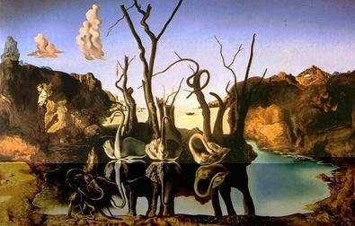

Swans Reflecting Elephants
Salvador Dalí · 1937 · Oil on canvas · 51 × 77 cm · Private collection
In copyright. Look and learn: shown for study, not for download.
The picture is built on a reflection: three swans in front of leafless trees are mirrored in a lake so that their necks become trunks, their bodies ears and the trees legs. Dalí set out this way of making double images in his 1935 essay The Conquest of the Irrational, and had used a lake the same way in The Metamorphosis of Narcissus. At the time his main patron in London was the wealthy Edward James, who supported him for two years from 1936. The background is a Catalan landscape.